Module 3: Optical and Electrical I/O
Integrated Optics Course
University of Trento
2026-10-17
Module Overview
Learning Objectives
- Understand coupling challenges in integrated photonics
- Master grating coupler design principles
- Learn polarization management techniques
- Explore optical and electrical interfaces
- Apply design methodologies to real devices
Module Structure
- Grating Couplers (GC) - Vertical coupling solutions
- Edge Couplers - Horizontal coupling techniques
- Polarization Management - PDM and diversity schemes
- Optical Interfaces - Fiber and free-space coupling
- Electrical Contacts - Interconnection technologies
A. Grating Couplers
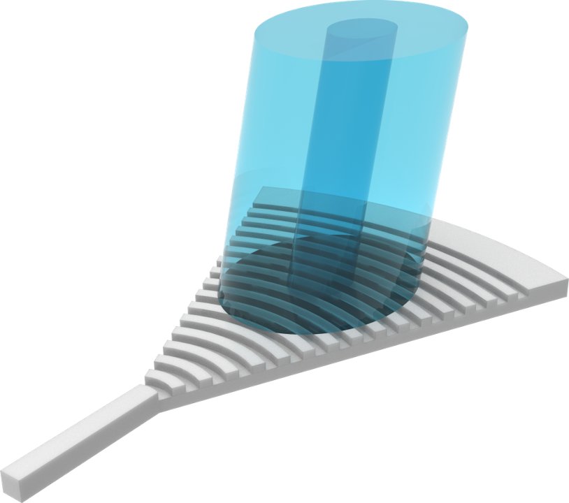
Grating coupler with optical fiber
Introduction to Grating Couplers
Why Grating Couplers?
- Vertical coupling from optical fiber
- Wafer-scale testing capability
- Flexible positioning on chip
- CMOS compatible fabrication
Applications
- Dense I/O arrays
- Prototyping and testing
- Multi-chip integration
- Silicon photonics platforms
Challenges in Grating Coupling
1. Coupling Efficiency
- Typical efficiency: -3 to -6 dB per coupler
- Mode mismatch between fiber and waveguide
- Back-reflections and directionality issues
2. Bandwidth Limitations
- Narrow spectral bandwidth (~30-40 nm)
- Wavelength-dependent coupling angle
- Trade-off between efficiency and bandwidth
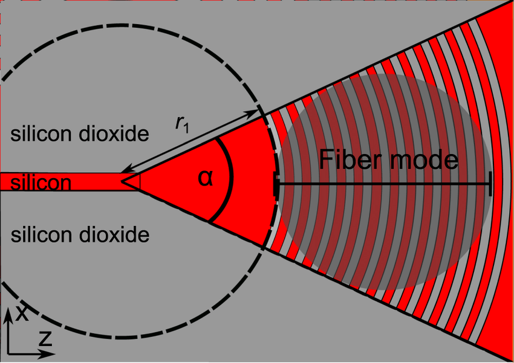
Challenges (continued)
3. Polarization Sensitivity
- Strong polarization dependence
- TE/TM mode coupling differences
- Requires polarization management
4. Fabrication Tolerance
- Sensitive to etch depth variations
- Sidewall roughness effects
- Overlay and alignment errors
5. Temperature Sensitivity
- Wavelength drift with temperature (~0.07 nm/°C)
- Requires temperature stabilization
Theory and Principles
Bragg Condition
The fundamental coupling condition for grating couplers:
\[\beta = k_0 n_{eff} = k_0 n_{fiber} \sin(\theta) + m \frac{2\pi}{\Lambda}\]
Where:
- \(\beta\) = propagation constant of waveguide mode
- \(k_0 = 2\pi/\lambda\) = free-space wavenumber
- \(n_{eff}\) = effective refractive index
- \(\theta\) = fiber angle
- \(\Lambda\) = grating period
- \(m\) = diffraction order (typically ±1)
Coupling Efficiency Theory
Power Coupling Coefficient
\[\eta = \left| \int \int E_{fiber}^* \cdot E_{grating} \, dx \, dy \right|^2\]
Loss Mechanisms
- Upward radiation loss: \(\alpha_{up}\)
- Downward radiation loss: \(\alpha_{down}\)
- Mode mismatch loss: \(\alpha_{mismatch}\)
- Back-reflection loss: \(\alpha_{refl}\)
\[\eta_{total} = \eta_{directionality} \times \eta_{overlap} \times (1 - R)\]
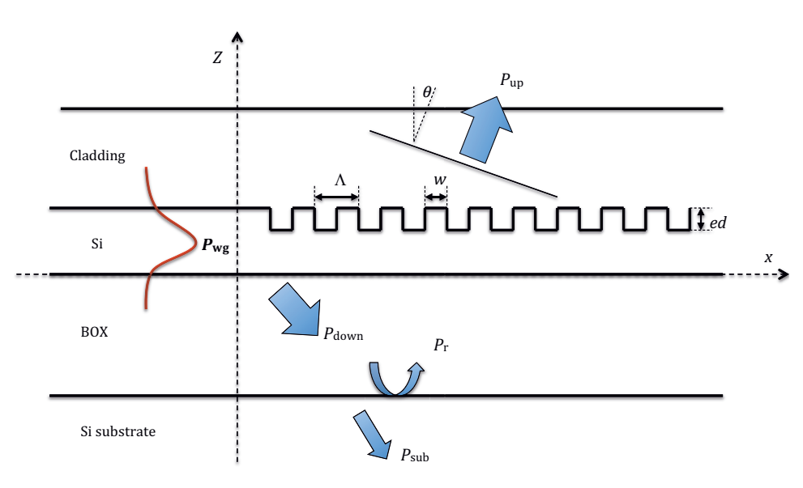
Grating Strength and Directionality
Directionality
To maximize upward coupling and minimize substrate loss:
\[D = \frac{P_{up}}{P_{down}}\]
Solutions:
- Bottom reflector (metal or distributed Bragg reflector)
- Optimized duty cycle and etch depth
- Blazed gratings
Coupling Strength
\[\alpha = \frac{\pi}{\lambda} \Delta n_{eff} \cdot \Gamma\]
Where \(\Delta n_{eff}\) is the effective index modulation and \(\Gamma\) is the confinement factor.
Graphical representation (1)
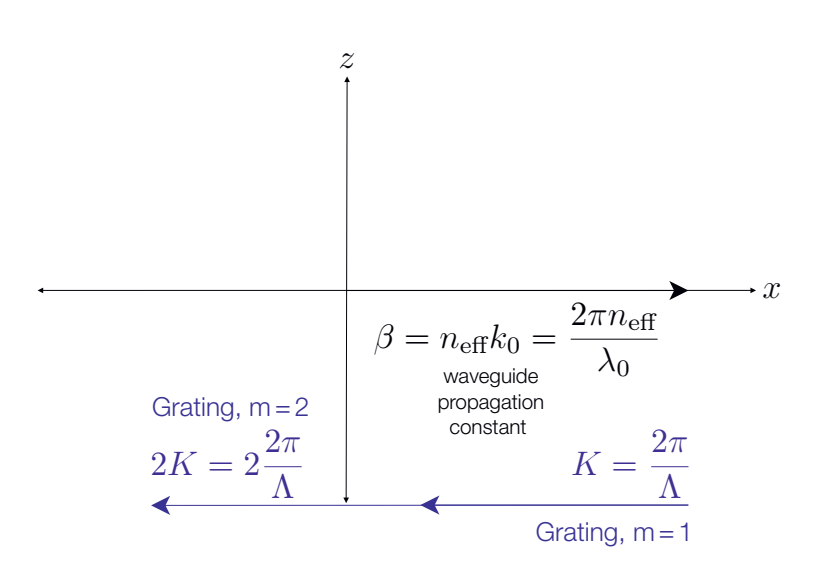
Graphical representation (2)
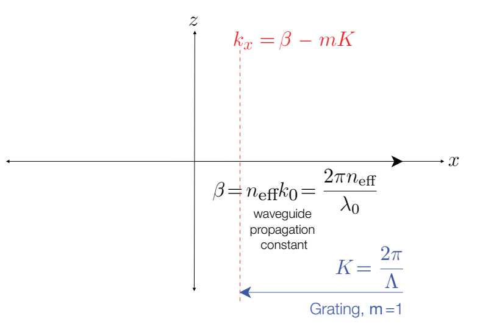
general form of the Bragg condition
Graphical representation (3)
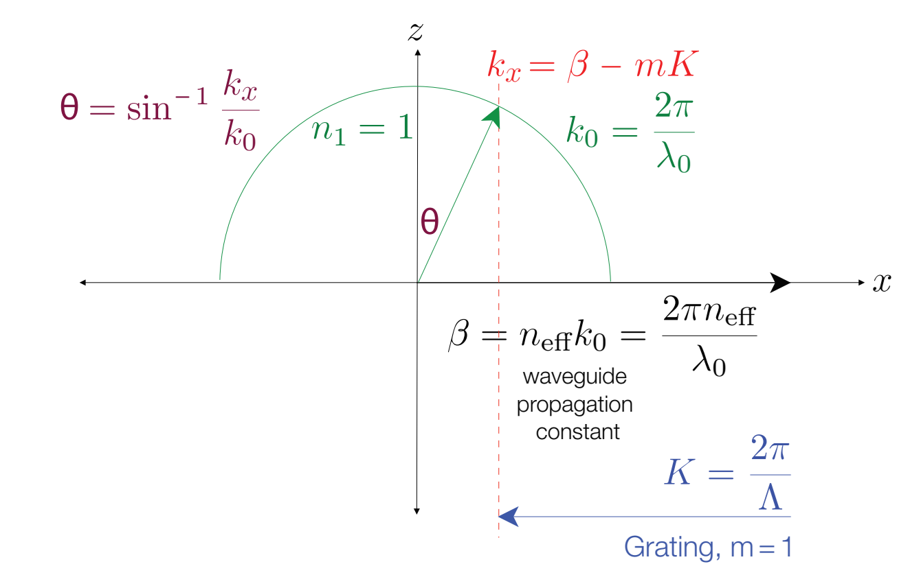
in air
Graphical representation (4)
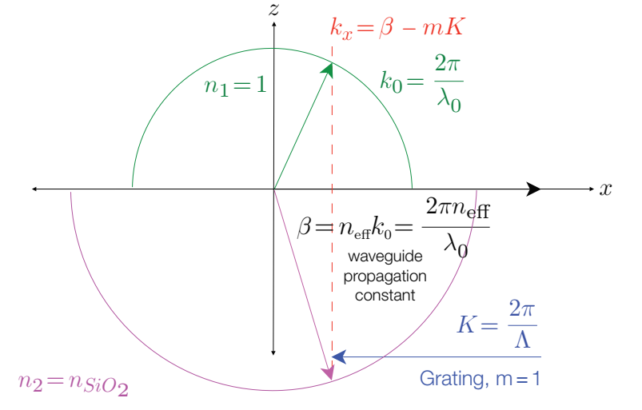
in silica
Design Methodology
Step 1: Define Specifications
- Target wavelength (\(\lambda_0\))
- Bandwidth requirement
- Polarization (TE/TM)
- Maximum insertion loss
- Fiber angle preference
Design Methodology (continued)
Step 2: Initial Parameter Selection
Grating Period:
\[\Lambda = \frac{\lambda_0}{n_{eff} - n_{fiber}\sin(\theta)}\]
Typical values:
- \(\Lambda\) = 500-700 nm for 1550 nm, TE mode
- Fiber angle: 8-15°
- Silicon thickness: 220 nm (SOI platform)
Impact of pitch
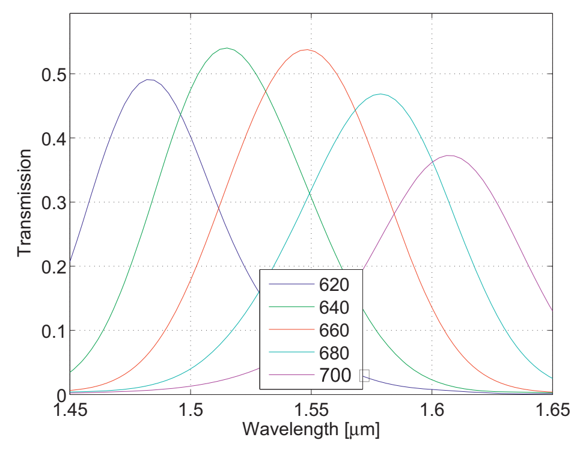
T vs Pitch
Impact of angle
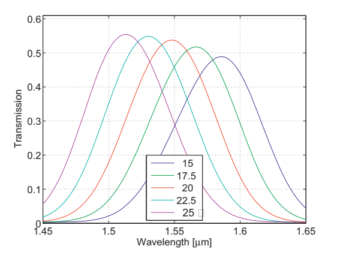
T vs angle
Design Methodology (continued)
Step 3: Optimize Design Parameters
Parameters to optimize:
- Duty cycle (40-60%)
- Etch depth (partial/full etch)
- Number of periods (20-40)
- Taper configuration
Optimization methods:
- 2D/3D FDTD simulations
- EME (Eigenmode Expansion)
- RCWA (Rigorous Coupled Wave Analysis)
- Parametric sweeps
Confront 2D/3D
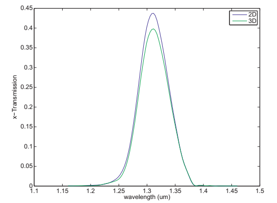
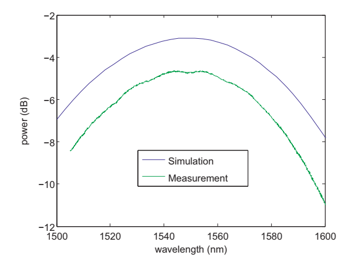
—Design Methodology (continued)
Step 4: Back-Reflector Design
For improved directionality (D > 10 dB):
Metal reflector:
- Aluminum or gold layer
- Distance from grating: \(\lambda/(4n_{BOX})\)
- Accounts for phase matching
DBR approach:
\[d_{Si/SiO_2} = \frac{\lambda}{4n_{Si/SiO_2}}\]
Multiple layer pairs for high reflectivity
Effect of the BOX
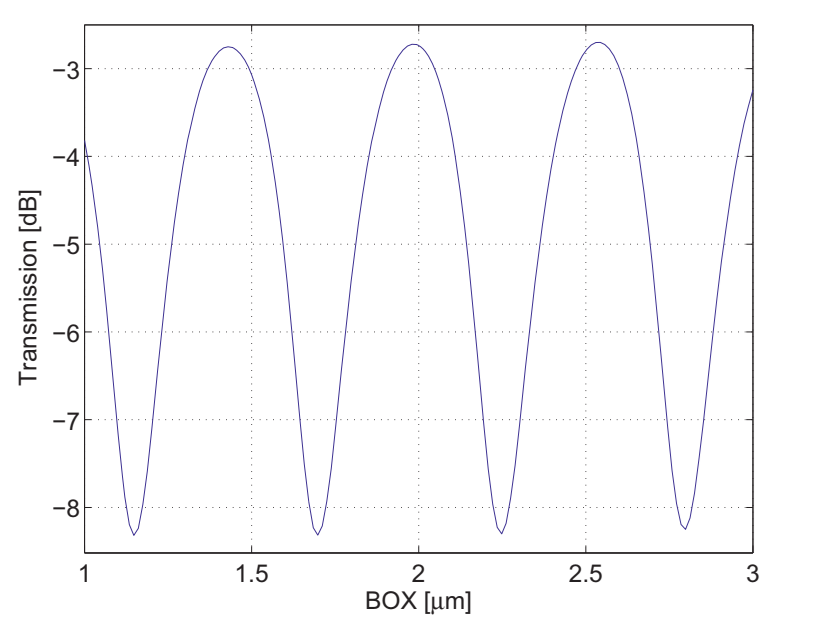
T vs Box Thickness
Design Methodology (continued)
Step 5: Apodization and Tapering
Apodization techniques:
- Vary duty cycle along propagation
- Gaussian or exponential profiles
- Improves mode matching
Input waveguide taper:
\[w(z) = w_0 + (w_1 - w_0)\left(\frac{z}{L_{taper}}\right)^2\]
Reduces back-reflection and improves coupling
DEMO: 1D Grating Coupler Design
Example Design Parameters
Wavelength: 1550 nm
Platform: 220 nm SOI
Polarization: TE
Target efficiency: > -4 dB
Bandwidth: > 35 nm# Python design example
lambda_0 = 1.55e-6 # wavelength in meters
n_eff = 2.84 # effective index (TE mode)
n_fiber = 1.45 # fiber mode index
theta = 10 # fiber angle in degrees
import numpy as np
Lambda = lambda_0 / (n_eff - n_fiber * np.sin(np.radians(theta)))
print(f"Grating period: {Lambda*1e9:.1f} nm")
# Output: ~630 nm- Period (Λ): 630 nm
- Duty cycle: 50%
- Etch depth: 70 nm
- Number of periods: 25
- Fiber angle: 10°
Effect of polarisation
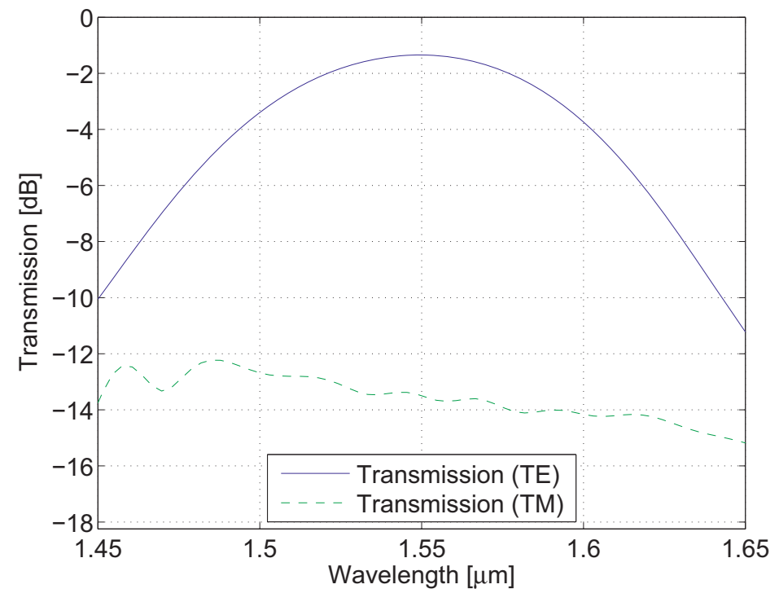
1D GC Performance Metrics
Typical Performance
| Parameter | Value | Comment |
|---|---|---|
| Peak coupling loss | -3 to -5 dB | With bottom reflector |
| 1-dB bandwidth | 35-40 nm | At 1550 nm |
| Back-reflection | < -25 dB | With proper design |
| Polarization dependence | < 1 dB | For TE-optimized |
| Temperature sensitivity | 0.07 nm/°C | Wavelength shift |
Advanced 1D GC Designs
Apodized Gratings
Benefits:
- Improved bandwidth (>50 nm possible)
- Better mode matching
- Reduced side lobes
Implementation:
- Non-uniform period
- Varying duty cycle
- Focusing grating structures
Curved Gratings
- Compensate for mode asymmetry
- Improved coupling efficiency
- Better fiber alignment tolerance

Tolerance
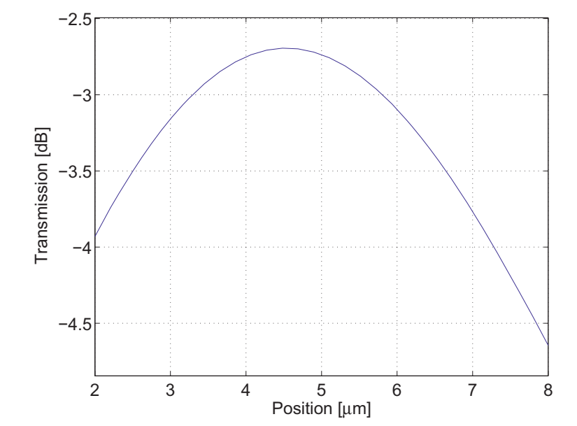
Position Tolerance
B. Edge Couplers
Introduction to Edge Couplers
Advantages:
- Broadband operation (>100 nm)
- Low loss (<1 dB possible)
- Polarization diversity capability
- Temperature insensitive
Disadvantages:
- Requires chip edge access
- Cleaving/polishing needed
- Limited I/O density
- Not for wafer-scale testing
Nano-Tapers: Theory
Mode Size Mismatch Problem
Challenge:
- Fiber mode diameter: ~10 μm
- Silicon waveguide mode: ~0.5 μm
- Direct coupling loss: >15 dB
Solution: Adiabatic mode conversion
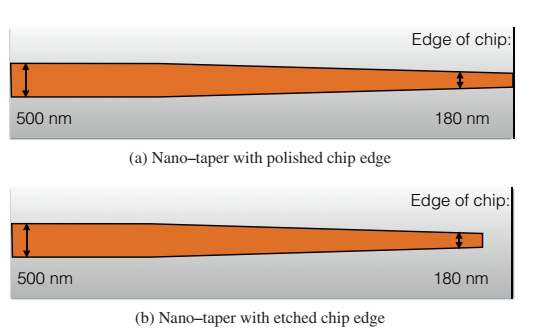
Examples
Nano-Taper Design
Inverse Taper Structure
The waveguide width gradually decreases:
\[w(z) = w_{wide} \cdot \exp\left(-\frac{z}{L_c}\right) + w_{tip}\]
Where:
- \(w_{wide}\) = wide waveguide width (~500 nm)
- \(w_{tip}\) = tip width (150-200 nm)
- \(L_c\) = characteristic taper length
- \(z\) = position along taper
Nano-Taper Parameters
Critical Design Parameters
- Tip width: 150-200 nm
- Narrower = better coupling
- Limited by fabrication
- Taper length: 50-300 μm
- Longer = more adiabatic
- Trade-off with chip area
- Mode expansion region
- Low-index cladding extends mode
- Polymer waveguide overlay
Adiabatic Condition
Maintaining Low Loss
For adiabatic mode conversion:
\[\frac{d\beta}{dz} \ll |\beta_1 - \beta_2|^2\]
Where \(\beta_1\) and \(\beta_2\) are propagation constants of the two lowest-order modes.
Practical rule:
- Taper angle < 1° for low loss
- Exponential tapers preferred over linear
Effect of taper length
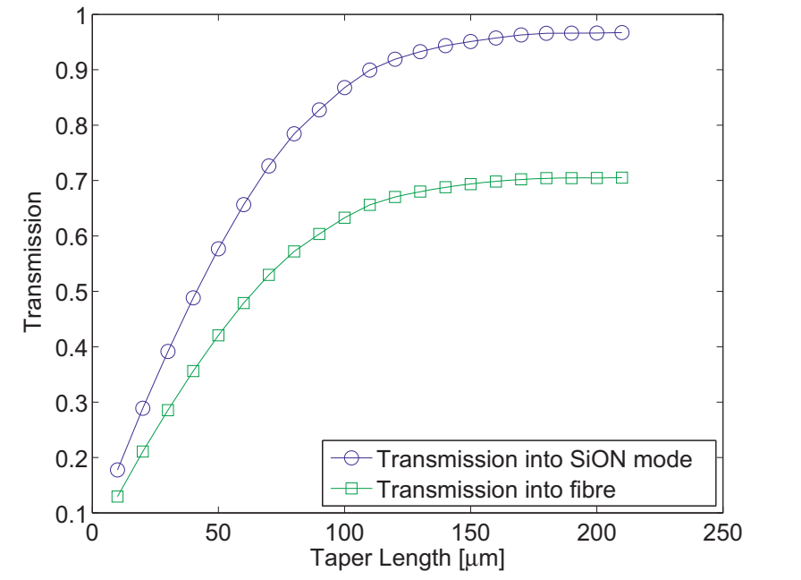
Edge Couplers with Overlay
Polymer Waveguide Approach
Structure:
- Silicon nano-taper (tip: 150 nm)
- Polymer waveguide overlay (~3×3 μm)
- Gradual mode transition
- Index-matched to fiber
Advantages:
- Coupling loss: < 1 dB
- Broad bandwidth
- Relaxed alignment tolerance
- Protects delicate tip
typical Structure
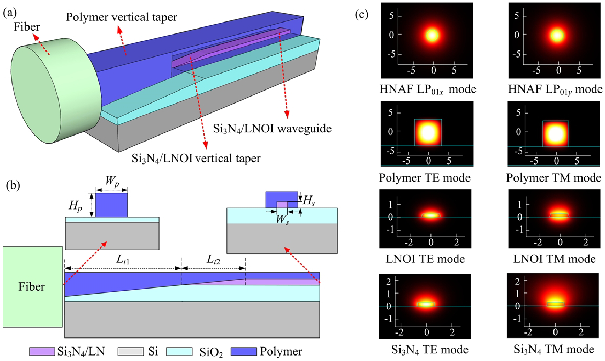
Overlay structure
from: “Mengruo Zhang, Jieyun Wu, Zhiying Zhao, and Kaixin Chen,”Efficient and polarization insensitive edge coupler based on cascaded vertical waveguide tapers,” Opt. Express 31, 31796-31805 (2023)”
Overlay Design Considerations
Material Selection
Polymer requirements:
- Refractive index: 1.45-1.5
- Low loss at operating wavelength
- Thermal stability
- CMOS compatible
Common materials:
- SU-8 photoresist
- BCB (Benzocyclobutene)
- PMMA
- Polyimide
Overlay Fabrication
Process Flow
- Silicon nano-taper fabrication
- E-beam lithography for tip
- Careful etch control
- Polymer deposition
- Spin coating
- Controlled thickness
- Polymer waveguide patterning
- Lithography and etch
- or direct UV exposure
- End-face preparation
- Precision cleaving/dicing
- Polishing to optical quality
Edge Coupler Performance
Typical Specifications
| Parameter | Nano-taper alone | With overlay |
|---|---|---|
| Coupling loss | 3-5 dB | 0.5-1.5 dB |
| Bandwidth | > 100 nm | > 150 nm |
| Alignment tolerance (1 dB) | ±0.5 μm | ±1.5 μm |
| Polarization dependence | < 0.5 dB | < 0.3 dB |
| Back-reflection | < -40 dB | < -50 dB |
Bilayer Edge Couplers
Advanced Structure
Concept:
- Two-layer taper structure
- Silicon + Silicon Nitride
- Optimized mode evolution
- Ultra-low loss possible
Performance:
- Coupling loss: < 0.5 dB
- Very broad bandwidth
- Excellent mode matching
C. Polarization Management
Polarization Challenges in Integrated Optics
The Polarization Problem
- Silicon waveguides are highly birefringent
- TE and TM modes have different propagation constants
- Fiber polarization is random in field deployment
- Most devices optimized for single polarization (TE)
- Polarization-dependent loss (PDL) is critical issue
Polarization Dependent Loss (PDL)
Definition and Impact
\[PDL = 10 \log_{10} \left(\frac{T_{max}}{T_{min}}\right) \text{ [dB]}\]
Where \(T_{max}\) and \(T_{min}\) are maximum and minimum transmissions over all input polarization states.
System Impact:
- Signal fading
- BER degradation
- Limits system performance
- Target: PDL < 0.5 dB for most applications
Polarization Diversity Multiplexing (PDM)
Concept
Basic Idea:
- Split both polarizations
- Process independently
- Recombine outputs
- Polarization-insensitive system
Components needed:
- Polarization splitter/rotator
- Dual processing paths
- Polarization combiner
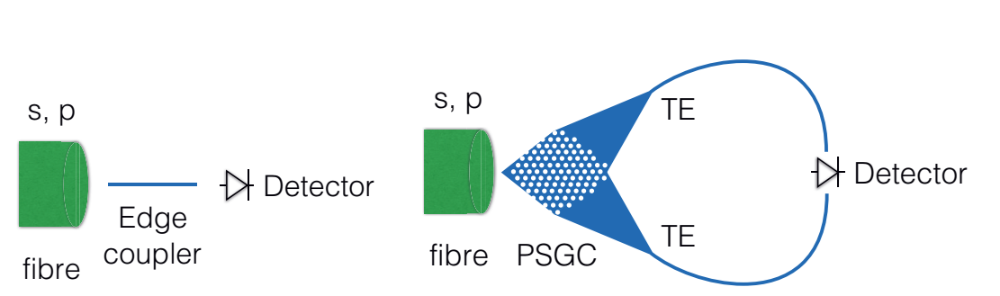
2D Grating Couplers
Two-Dimensional Gratings for PDM
Advantages:
- Couple both TE and TM from single fiber
- Natural polarization splitting
- Compact footprint
- Enables true PDM operation
Structure:
- 2D periodic structure (grid pattern)
- Different periods for TE/TM
- Can include focusing elements
2D GC Design
Design Considerations
Period selection:
\[\Lambda_x = \frac{\lambda}{n_{eff,TE} - n_{fiber}\sin(\theta_x)}\]
\[\Lambda_y = \frac{\lambda}{n_{eff,TM} - n_{fiber}\sin(\theta_y)}\]
Challenges:
- More complex fabrication
- Lower efficiency than 1D (typically -6 to -8 dB)
- Requires precise 2D patterning
- Larger footprint
2D GC Performance
Typical Characteristics
| Parameter | TE port | TM port |
|---|---|---|
| Coupling loss | -5 to -7 dB | -5 to -7 dB |
| Crosstalk | < -15 dB | < -15 dB |
| 1-dB bandwidth | ~30 nm | ~30 nm |
| Footprint | ~30×30 μm² |
Applications:
- PDM receivers
- Coherent systems
- Polarization-insensitive devices
Polarization Splitter-Rotator (PSR)
Concept and Operation
Function:
- Split TE and TM polarizations
- Rotate TM to TE (or vice versa)
- Output both on TE-optimized waveguides
Key advantage: Process both polarizations with same circuitry
PSR Design Approaches
1. Asymmetric Directional Coupler
Principle:
- Different coupling for TE/TM
- Based on mode asymmetry
- Integrated rotation section
Performance:
- Insertion loss: 0.5-1 dB
- Extinction ratio: >15 dB
- Bandwidth: 50-80 nm
2. Mode Evolution Based
- Adiabatic mode conversion
- Gradually varying structure
- Low loss, broad bandwidth
PSR Performance Metrics
Key Specifications
| Parameter | Typical Value | Target |
|---|---|---|
| Insertion loss | 0.5-1.5 dB | < 1 dB |
| Polarization extinction | 15-25 dB | > 20 dB |
| Bandwidth (1-dB) | 60-100 nm | > 80 nm |
| Footprint | 50-150 μm | Minimize |
| Crosstalk | < -20 dB | < -25 dB |
Polarization Controllers (PC)
Active Polarization Control
Need: Compensate for polarization drift in fibers
Approaches:
- Thermo-optic PC
- Heaters induce phase shift
- TE/TM differential phase
- Constructs arbitrary polarization
- Electro-optic PC
- Voltage-controlled birefringence
- Faster response (MHz-GHz)
- Higher power consumption
PC Implementation
Cascaded Phase Shifter Design
Configuration: Series of waveguide sections with controlled birefringence
\[\Delta\phi_{TE-TM} = \frac{2\pi}{\lambda} \Delta n_{eff} L\]
Typical cascade:
- 3-4 sections at different orientations
- Each provides phase shift: 0-π
- Combined: complete Poincaré sphere coverage
PC Performance
Specifications and Tradeoffs
Thermo-optic:
- Power: 10-50 mW/\(\pi\)
- Speed: ms response
- Low insertion loss
- Compact design
Electro-optic:
- Power: mW level
- Speed: ns-\(\mu\)s response
- Requires special materials
- More complex fabrication
Wide-band polarization controller for Si photonic integrated circuits
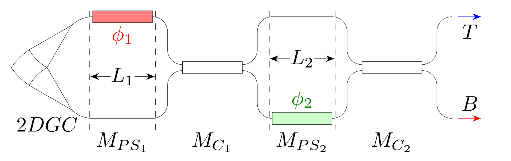
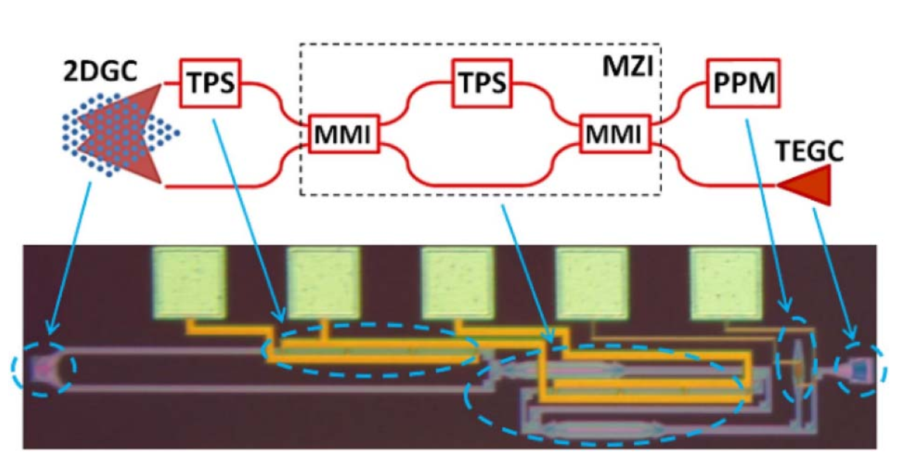
from: P. Velha, V. Sorianello, M. V. Preite, G. De Angelis, T. Cassese, A. Bianchi, F. Testa, and M. Romagnoli, “Wide-band polarization controller for Si photonic integrated circuits,” Opt. Lett. 41, 5656-5659 (2016)
Polarization Diversity Systems
Complete PDM System Architecture
Input Fiber → PSR → [TE path - Signal processing]
↓
→ [TM→TE path - Signal processing]
↓
Combiner → OutputKey benefits:
- Polarization-insensitive operation
- Maximizes signal utilization
- Essential for coherent systems
- Doubles spectral efficiency
Polarization Diversity for Receivers
Coherent Detection Application
Structure:
- Input PSR splits signal
- Dual local oscillator (LO) paths
- Separate 90° hybrids for I/Q
- Balanced photodetectors
- DSP combines both polarizations
Advantage: Full polarization information captured
D. Optical Interfaces
Overview of Optical Interfaces
Coupling Methods
- Fiber Arrays - Multiple fibers in precise alignment
- Free-Space Coupling - Lens-based systems
- Fiber Tapers - Mode-matched coupling
- V-Groove Assembly - Passive alignment
- Active Alignment - Optimized positioning
Fiber Arrays
Multi-Fiber Connection Solution
Structure:
- Multiple fibers (typically 4, 8, 12, or 24)
- Precise spacing (127 or 250 μm pitch)
- Held in V-groove array
- Polished end-face
Applications:
- High port-count PICs
- Transceivers and switches
- Parallel optics
- Dense WDM systems
Fiber Array Specifications
Key Parameters
| Parameter | Standard Value |
|---|---|
| Fiber pitch | 127 μm or 250 μm |
| Pitch accuracy | ±0.5 μm |
| Height variation | ±0.25 μm |
| Angle tolerance | ±0.5° |
| End-face quality | < 0.5 nm Ra |
Connector types:
- MT ferrule (12/24 fiber)
- Custom arrays
- Ribbon fiber
Fiber Array Assembly
Assembly Process
- PIC preparation
- Edge coupler array at standard pitch
- Cleaved/polished facet
- Anti-reflection coating (optional)
- Passive alignment
- V-groove substrate
- Precision fabricated alignment features
- UV-curable epoxy bonding
- Active alignment (higher performance)
- Optimize each fiber individually
- Monitor coupling during assembly
- Laser weld or epoxy fix
Pictures
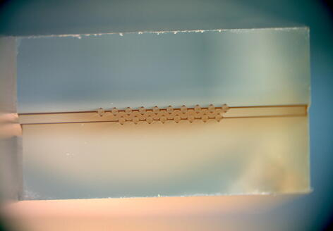
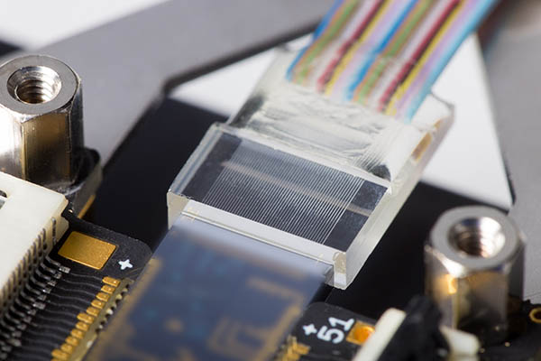
Free-Space Coupling
Lens-Based Optical Interfaces
Components:
- Collimating lenses
- Focusing optics
- Beam shaping elements
- Anti-reflection coatings
Applications:
- Chip-to-chip coupling
- Optical testing
- Flexible prototyping
- Non-contact probing
Free-Space Coupling Design
Optical System Design
Gaussian beam propagation:
\[w(z) = w_0 \sqrt{1 + \left(\frac{z}{z_R}\right)^2}\]
Where:
- \(w_0\) = beam waist
- \(z_R = \frac{\pi w_0^2}{\lambda}\) = Rayleigh range
Design considerations:
- Working distance
- Alignment tolerance
- Spot size matching
- Aberration control
Pictures
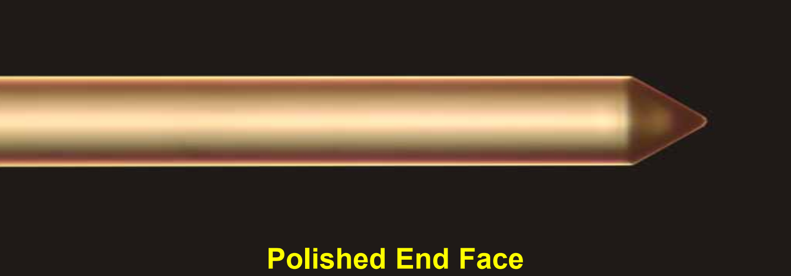
Free-Space Coupling Performance
Typical Specifications
| Parameter | Value | Notes |
|---|---|---|
| Coupling loss | 2-5 dB | Without optimization |
| Working distance | 5-20 mm | Depends on lens |
| Alignment tolerance | ±5-20 μm | For 1 dB penalty |
| Bandwidth | > 200 nm | Achromatic optics |
Advantages:
- No physical contact
- Easy re-alignment
- Suitable for testing
Fiber Tapers
Lensed and Tapered Fibers
Types:
- Lensed fibers
- Curved end-face
- Reduced spot size (~3 μm)
- Shorter working distance
- Tapered fibers
- Pulled fiber tip
- Very small spot (<2 μm)
- Fragile but efficient
Lensed Fiber Characteristics
Design and Performance
Key parameters:
- Lens radius of curvature
- Working distance: 10-30 μm
- Spot size: 2.5-4 μm
- Numerical aperture: ~0.25
Coupling improvement:
- Better mode matching to small waveguides
- Reduced coupling loss by 3-5 dB vs. standard fiber
- Suitable for edge coupling
Fiber Taper Fabrication
Manufacturing Methods
Approaches:
- Arc fusion - Local heating and pulling
- Chemical etching - HF acid etching
- Laser pulling - CO₂ laser heating
- Mechanical grinding - Precision polishing
Challenges:
- Maintaining concentricity
- Reproducibility
- Fragility of tip
- Cleanliness requirements
V-Groove Assembly
Passive Alignment Technique
V-Groove principle:
- Silicon V-grooves (54.7° angle)
- Precise etch by KOH
- Self-centering fiber placement
- High accuracy (~0.5 μm)
Alignment features:
- Etched trenches on PIC
- Match fiber array pitch
- No active alignment needed
- Cost-effective assembly
V-Groove Design
Fabrication and Integration
Silicon V-groove fabrication:
\[\text{Groove depth} = \frac{w}{2\sqrt{2}} = \frac{125\,\mu m}{2\sqrt{2}} \approx 44\,\mu m\]
For standard 125 μm diameter fiber.
PIC alignment marks:
- Etched fiducials
- Reference to waveguide cores
- ±1 μm accuracy achievable
Pictures
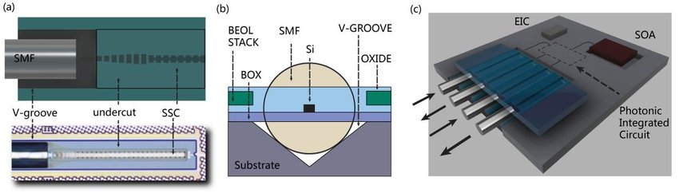
V-groove
from: A CMOS Compatible Monolithic Fiber Attach Solution with Reliable Performance and Self-alignment
Packaging Considerations
Hermetic and Non-Hermetic Packages
Hermetic sealing:
- Prevents moisture ingress
- Critical for reliability
- Metal or ceramic packages
- Seam or laser welding
Environmental protection:
- Operating temperature: -40 to +85°C
- Storage: -40 to +100°C
- Humidity resistance
- Mechanical shock tolerance
E. Electrical Contacts
Electrical Interconnection Overview
Need for Electrical I/O
- DC bias for phase shifters
- RF signals for modulators (>40 GHz)
- Thermo-optic heaters
- Photodetector readout
- Control and monitoring circuits
Three main technologies:
- Wire Bonding
- Micro-Bump (Flip-Chip)
- Through-Silicon Via (TSV)
Wire Bonding
Traditional Interconnection Method
Process:
- Ultrasonic or thermosonic
- Gold or aluminum wire
- 25-75 μm diameter
- Ball or wedge bonding
Characteristics:
- Mature technology
- Low cost
- Moderate frequency (<10 GHz)
- Sequential process
Process Flow
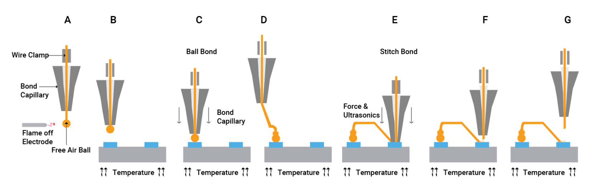
Ball bonding process flow
Wire Bonding: Technical Details
Bonding Parameters
Bond pad requirements:
- Minimum size: 75×75 μm²
- Pad metal: Al, Au, or Cu
- Surface finish critical
- Passivation opening design
Wire loop:
- Height: 150-300 μm
- Length: minimize for RF
- Inductance: ~1 nH/mm
- Resistance: ~50 mΩ/mm (25 μm Au)
Wire Bonding Performance
Electrical Characteristics
| Parameter | Value |
|---|---|
| DC resistance | 50-100 mΩ |
| Inductance | 0.5-2 nH |
| Bandwidth (3-dB) | ~10 GHz |
| Capacitance | ~0.1 pF |
| Reliability | > 10⁹ cycles |
Limitations for high-speed:
- Parasitic inductance
- Impedance mismatch
- Not suitable for >25 GHz RF
Wire Bonding Layout
Design Considerations
Best practices:
- Short wire lengths (<1 mm for RF)
- Multiple parallel bonds for power
- Dedicated grounds near signals
- Avoid crossing wires
- Optimize bond pad placement
For RF applications:
- Use multiple short bonds in parallel
- Ground-signal-ground (GSG) configuration
- Impedance-controlled transmission lines
Pictures


Micro-Bump (Flip-Chip)
Advanced Interconnection Technology
Concept:
- PIC flipped and bonded face-down
- Solder bumps provide connection
- Parallel assembly (all connections simultaneous)
- Very short electrical path
picture
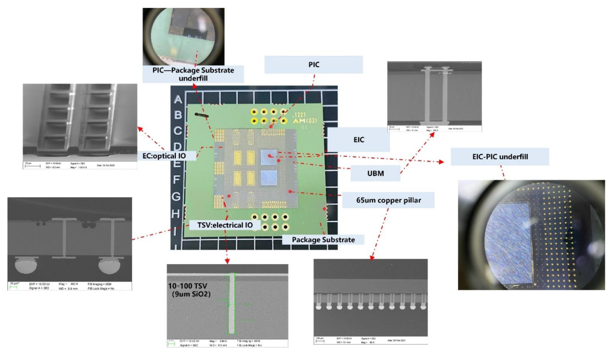
Flip-Chip Process
Manufacturing Steps
- Bump formation on PIC
- Electroplating or solder paste
- Typical bump diameter: 50-100 μm
- Pitch: 100-200 μm
- Substrate preparation
- Matching pads on carrier/PCB
- Under-bump metallization (UBM)
- Solder paste or pre-formed bumps
- Assembly
- Alignment (±5 μm accuracy)
- Reflow soldering
- Underfill for reliability
Micro-Bump Materials
Solder Bump Compositions
Common alloys:
- SnAg (96.5Sn/3.5Ag) - Lead-free, high reliability
- SnPb (63Sn/37Pb) - Traditional eutectic
- SnAgCu (SAC) - Lead-free alternative
- AuSn (80Au/20Sn) - High temperature, hermetic
Under-Bump Metallization (UBM):
- Ti/Ni/Au or Ti/Cu/Ni/Au
- Adhesion and wetting layers
- Diffusion barrier
Flip-Chip Performance
Electrical and RF Characteristics
| Parameter | Value |
|---|---|
| Inductance | < 100 pH |
| Capacitance | 10-50 fF |
| Resistance | < 10 mΩ |
| Bandwidth | > 100 GHz |
| Thermal resistance | 10-50 K/W |
Advantages:
- Excellent high-frequency performance
- Short interconnect length
- High I/O density
- Good thermal path
Flip-Chip Challenges
Design and Reliability Considerations
Challenges:
- CTE mismatch - Different expansion coefficients
- Alignment accuracy - Requires ±5 μm or better
- Underfill - Necessary for reliability but adds process
- Rework - Difficult to repair
- Cost - More expensive than wire bonding
Solutions:
- Compliant bumps
- Optimized underfill materials
- Precision placement equipment
Through-Silicon Via (TSV)
3D Interconnection Technology
Concept:
- Vertical vias through silicon substrate
- Connect front-side to back-side
- Enable 3D integration
- Very short electrical path
Applications:
- Backside illuminated detectors
- 3D stacked chips
- High-density interposers
- CMOS-photonics co-integration
TSV Structure and Fabrication
Manufacturing Process
- Deep reactive ion etching (DRIE)
- Aspect ratio: 5:1 to 20:1 and Diameter: 5-50 μm
- Depth: up to substrate thickness
- Isolation layer
- SiO₂ thermal oxidation or PECVD (Thickness: 0.5-2 μm)prevents leakage current
- Barrier/seed layer
- Ti/Cu or Ta/Cu through Sputtering or evaporation
- Via filling
- Electroplating (Cu) and Physical vapor deposition
- Avoid voids
- CMP and metallization
- Chemical-mechanical polish
- Top and bottom contacts

Pictures


TSV Design Parameters
Key Specifications
| Parameter | Typical Range | High-Performance |
|---|---|---|
| Via diameter | 10-50 μm | 5-10 μm |
| Via depth | 50-300 μm | 50-100 μm |
| Aspect ratio | 5:1 to 10:1 | up to 20:1 |
| Pitch | 40-100 μm | 20-40 μm |
| Resistance | 10-100 mΩ | < 10 mΩ |
| Capacitance | 50-200 fF | < 50 fF |
TSV Electrical Performance
High-Frequency Characteristics
Parasitic elements:
\(Z_{TSV} = R_{TSV} + j\omega L_{TSV} + \frac{1}{j\omega C_{TSV}}\)
Typical values:
- Resistance: 20-50 mΩ (for 10 μm × 100 μm Cu via)
- Inductance: 10-50 pH
- Capacitance: 100-300 fF
- Bandwidth: > 100 GHz
Advantages over wire bonds:
- 10× lower inductance
- Much higher bandwidth
- Better signal integrity
TSV Reliability Issues
Challenges and Solutions
Main concerns:
- Thermo-mechanical stress
- CTE mismatch: Si (2.6 ppm/K) vs Cu (17 ppm/K)
- Can cause cracking or delamination
- Keep-out zones around TSV (10-20 μm)
- Process-induced damage
- DRIE can damage devices
- Careful process optimization needed
- Isolation breakdown
- Ensure adequate oxide thickness
- Monitor leakage current
TSV for Photonics
Specific Photonic Applications
Backside detector contacts:
- Illuminated detectors without front-side metal
- Improved optical performance
- Simplified routing
Co-packaged optics:
- ASIC and PIC in 3D stack
- Minimize latency
- High-bandwidth electrical interface
Interposer technology:
- Silicon photonics on interposer
- Multiple dies integrated
- Fan-out routing
Comparison: Wire Bond vs Flip-Chip vs TSV
Technology Trade-offs
| Aspect | Wire Bond | Flip-Chip | TSV |
|---|---|---|---|
| Bandwidth | < 10 GHz | > 100 GHz | > 100 GHz |
| Inductance | 1-2 nH | < 100 pH | 10-50 pH |
| I/O density | Low | High | Very High |
| Cost | Low | Medium | High |
| Assembly | Sequential | Parallel | Embedded |
| Rework | Easy | Difficult | Impossible |
| Maturity | Very High | High | Medium |
| Thermal path | Poor | Good | Excellent |
Design Guidelines for Electrical Contacts
General Best Practices
For DC and low-frequency (<1 GHz):
- Wire bonding is cost-effective
- Multiple bonds in parallel for current capacity
- Minimize wire length
For RF (1-40 GHz):
- Flip-chip preferred for best performance
- Short wire bonds with GSG layout acceptable
- Careful impedance matching
For mmWave (>40 GHz):
- Flip-chip or TSV required
- Minimize parasitic capacitance
- Co-planar waveguide transitions
RF Transmission Line Design
On-Chip Routing
Coplanar waveguide (CPW):
\(Z_0 = \frac{30\pi}{\sqrt{\epsilon_{eff}}} \frac{K(k')}{K(k)}\)
Where \(k = s/(s+2w)\), \(s\) = gap, \(w\) = signal width
Design targets:
- 50 Ω characteristic impedance
- Minimize loss (<0.5 dB/mm at 40 GHz)
- Smooth transitions to bondpads/bumps
Substrate Crosstalk
Isolation Techniques
Problem: High-speed signals can couple through substrate
Solutions:
- Ground shields - Surround signals with ground
- Substrate contacts - Reduce substrate resistance
- Guard rings - Isolate sensitive circuits
- Proper spacing - Follow 3W rule (minimum)
- Differential signaling - Common-mode rejection
Thermal Management
Heat Dissipation Considerations
Heat sources in PICs:
- Thermo-optic heaters (10-50 mW each)
- High-speed modulators (100+ mW)
- Laser diodes (W-level)
- Photodetectors
Thermal interfaces:
- Wire bonds: Poor thermal path
- Flip-chip: Good conduction to substrate
- TSV: Excellent thermal via capability
- Heat sinks and active cooling for high power
Packaging Integration
Complete Package Design
Key elements:
- Optical interface (fiber array or free-space)
- Electrical interface (bond pads or bumps)
- Thermal management (heat sink, TEC)
- Mechanical support (rigid substrate)
- Environmental protection (hermetic seal)
Design flow:
Optical → Electrical → Thermal → Mechanical → Reliability
Multi-Chip Integration
System-in-Package Approach
Concepts:
- PIC + ASIC co-packaging
- Optical interposer
- 2.5D and 3D integration
- Heterogeneous integration
Interconnection hierarchy:
- On-chip: Metal layers in CMOS
- Chip-to-chip: Wire bonds, flip-chip, TSV
- Package-to-board: BGA, LGA, connectors
Electrical Measurement and Testing
Contact Techniques for Characterization
Probe testing:
- RF probes (GSG configuration)
- DC probe cards
- Automated probe stations
- On-wafer testing before packaging
Packaged device testing:
- PCB test fixtures
- High-frequency connectors
- Environmental chambers
- Reliability testing
Design for Testability (DFT)
Built-in Test Structures
Include on PIC:
- Test pads - Accessible contact points
- Monitor photodetectors - Optical power
- Heater test structures - Calibration
- Electrical opens/shorts - Continuity
- Reference devices - Process monitoring
Placement strategy:
- Scribe line structures for process control
- In-device monitors for real-time feedback
- Accessible after packaging
Signal Integrity Considerations
High-Speed Design Rules
Critical factors:
- Impedance matching - 50 Ω throughout
- Return path continuity - Ground plane integrity
- Via inductance - Minimize number and length
- Stub resonances - Avoid unterminated lines
- Skew matching - For differential pairs
Simulation tools:
- HFSS, CST for 3D EM
- ADS, Spectre for circuit
- Time-domain reflectometry (TDR)
Case Study: High-Speed Modulator Driver
50 GHz Modulator Interface
Requirements:
- Modulation bandwidth: 50 GHz
- Drive voltage: 2-4 Vpp
- Impedance: 50 Ω
- Return loss: < -10 dB
Implementation:
- Flip-chip assembly for low parasitics
- GSG flip-chip bumps (80 μm pitch)
- On-chip 50 Ω termination
- RF-optimized electrode design
Case Study: Dense I/O Transceiver
8-Channel 100G Transceiver
Specifications:
- 8 optical channels
- 8 bias controls
- 16 RF modulator drives
- 8 TIA outputs
- Temperature sensors and heaters
Solution:
- Fiber array for optical (250 μm pitch)
- Flip-chip for RF signals (100 μm pitch bumps)
- Wire bonds for DC bias and control
- TSV for backside photodetector contacts
Assembly Yield and Reliability
Ensuring High Manufacturing Yield
Yield loss mechanisms:
- Alignment errors - Active alignment critical
- Contamination - Clean room procedures
- Bond failures - Process control
- Optical damage - Handling procedures
Reliability testing:
- Temperature cycling (-40 to +85°C)
- Humidity testing (85°C/85% RH)
- Mechanical shock and vibration
- Long-term aging (1000+ hours)
- Target: < 100 FIT
Cost Considerations
Economic Analysis
Cost drivers:
| Assembly Method | Relative Cost | Volume Suitability |
|---|---|---|
| Wire bonding | 1× (baseline) | small volume OK |
| Flip-chip | 2-3× | Medium-high volume |
| TSV | 3-5× | Very high volume, high-end |
Cost reduction strategies:
- Passive alignment
- Standard fiber arrays
- Minimize active alignment
- Design for manufacturability
Emerging Technologies
Future Trends
Advanced packaging:
- Chiplet integration - Mix and match dies
- Photonic wire bonds - Optical interconnects
- Wafer-level packaging - Collective assembly
- Silicon bridge technology - Ultra-high density
- Co-packaged optics - Optics on ASIC package
2026+ outlook:
- Higher density (>500 I/O per cm²)
- Higher bandwidth (>200 GHz RF)
- Lower cost (<$5 per port)
Standards and Guidelines
Industry Standards
Relevant standards:
- IEC 61755: Fiber optic connector interfaces
- IEC 61300: Fiber optic interconnecting devices
- Telcordia GR-468: Generic reliability requirements
- IEEE 802.3: Ethernet optical interfaces
- OIF: Optical Internetworking Forum specs
Design compliance:
- Follow industry-accepted practices
- Consider interoperability
- Document deviations
Practical Design Example
Complete PDM Coherent Receiver
Optical interfaces:
- Input: 2D grating coupler (signal + LO)
- Monitor: Grating couplers for taps
Polarization management:
- On-chip PSR
- Dual 90° hybrid mixers
- 8 balanced photodetectors
Electrical interfaces:
- 8 TSV connections for PD cathodes
- Flip-chip bumps for TIA connections (8 channels)
- Wire bonds for DC bias (heaters, phase shifters)
Design Checklist
Pre-Fabrication Review
Optical I/O:
Electrical I/O:
Design Checklist (continued)
Pre-Fabrication Review
Assembly considerations:
Documentation:
Simulation and Modeling
Design Verification Tools
Optical simulation:
- FDTD: Lumerical, Ansys - Grating couplers
- EME: Mode propagation - Edge couplers
- BPM: Beam propagation - Waveguide transitions
Electrical simulation:
- HFSS/CST: 3D EM - RF structures, bumps
- Cadence: Circuit simulation - Impedance matching
- SPICE: DC and transient - Bias networks
Thermal simulation:
- COMSOL: Multi-physics - Heat distribution
- Ansys Icepak: Thermal - Package-level
Laboratory Characterization
Measurement Techniques
Optical measurements:
- Insertion loss vs. wavelength
- Polarization-dependent loss (PDL)
- Return loss
- Optical bandwidth
- Coupling efficiency
Electrical measurements:
- S-parameters (RF performance)
- Eye diagrams (signal integrity)
- Bit error rate (BER)
- Power consumption
- Thermal resistance
Troubleshooting Common Issues
Optical I/O Problems
| Symptom | Possible Cause | Solution |
|---|---|---|
| High loss | Misalignment | Re-optimize alignment |
| Mode mismatch | Redesign taper/GC | |
| Surface quality | Improve cleaving/polishing | |
| High PDL | Polarization mixing | Check PSR, add PC |
| Poor bandwidth | GC design | Optimize apodization |
| Back-reflection | Facet reflections | AR coating, angle |
Troubleshooting Common Issues (continued)
Electrical I/O Problems
| Symptom | Possible Cause | Solution |
|---|---|---|
| High RF loss | Bond inductance | Use flip-chip |
| Impedance mismatch | Redesign transmission lines | |
| Poor eye opening | Signal integrity issues | Check return path, vias |
| Crosstalk | Insufficient isolation | Add shielding, increase spacing |
| ESD damage | No protection | Add ESD structures |
| Thermal runaway | Poor heat sinking | Improve thermal interface |
Module Summary
Key Takeaways
- Grating couplers enable wafer-scale testing but have limited bandwidth
- Edge couplers provide broadband, low-loss coupling for production
- Polarization management is critical for system performance
- Fiber arrays enable high-density optical I/O
- Flip-chip and TSV are essential for high-speed electrical interfaces
Module Summary (continued)
Design Principles
Optical coupling:
- Match mode sizes for efficient coupling
- Consider bandwidth requirements
- Plan for polarization diversity
- Enable testability
Electrical connections:
- Choose technology based on frequency
- Minimize parasitic elements
- Ensure signal integrity
- Plan thermal management
Further Reading
Recommended Resources
Books:
- “Silicon Photonics Design” - Chrostowski & Hochberg (Reference book)
- “Optical Fiber Communications” - Agrawal
- “Microwave Engineering” - Pozar
Papers:
- Nature Photonics - Recent PDM and coupling work
- IEEE/OSA JLT - Photonic integration
- IEEE T-CPMT - Packaging technologies
Online:
- OptoElectronic Research Centre resources
- Lumerical Knowledge Base
- AIM Photonics Academy
Design Project: 4-Channel Transceiver
Assignment:
Design the complete optical and electrical I/O for a 4-channel, 100 Gbps transceiver:
Requirements:
- 4 optical inputs (O-band, 1310 nm)
- 4 optical outputs
- Polarization diversity on each channel
- High-speed modulation (25 GHz per channel)
- Include all bias and control connections
Deliverables:
- Grating coupler or edge coupler design
- Electrical interface layout (specify wire bond/flip-chip)
- Thermal management plan
- Assembly process flow
Questions?
Discussion Topics
- Which coupling approach is best for your application?
- How to balance performance, cost, and complexity?
- What are the yield and reliability implications?
- How does packaging affect system design?
Next Module: We’ll explore active photonic devices including modulators, phase shifters, and switches.
Appendix A: Design Parameters
Quick Reference Tables
Standard Fiber Parameters:
| Parameter | SMF-28 | Hi-NA Fiber |
|---|---|---|
| Core diameter | 8.2 μm | 4-5 μm |
| MFD @ 1550 nm | 10.4 μm | 6-7 μm |
| NA | 0.14 | 0.20-0.25 |
| Cladding | 125 μm | 80-125 μm |
Appendix B: Material Properties
Optical and Electrical Constants
Refractive indices (@ 1550 nm):
| Material | n | Comments |
|---|---|---|
| Silicon | 3.48 | Strong confinement |
| SiO₂ | 1.444 | Cladding |
| Si₃N₄ | 2.0 | Medium index |
| Polymer | 1.45-1.55 | Variable |
Thermal properties:
- Si CTE: 2.6 ppm/K
- SiO₂ CTE: 0.5 ppm/K
- Cu CTE: 17 ppm/K
Appendix C: Fabrication Tolerances
Typical Process Variations
Lithography:
- CD variation: ±10 nm (±5 nm for advanced)
- Overlay accuracy: ±30 nm
Etching:
- Depth control: ±5-10 nm
- Sidewall angle: ±2°
These variations impact:
- Grating coupler wavelength (±5 nm)
- Edge coupler efficiency (±0.5 dB)
- Waveguide effective index
Thank You!
Contact Information
Instructor: [Philippe Velha]
Email: [philippe.velha@unitn.it]
Office Hours: [contact me]
Course Website: [https://didatticaonline.unitn.it/dol/course/view.php?id=41724]
Next Class: Module 4 - Active Photonic Devices
Good luck with your designs!

Module 3: Optical and Electrical I/O